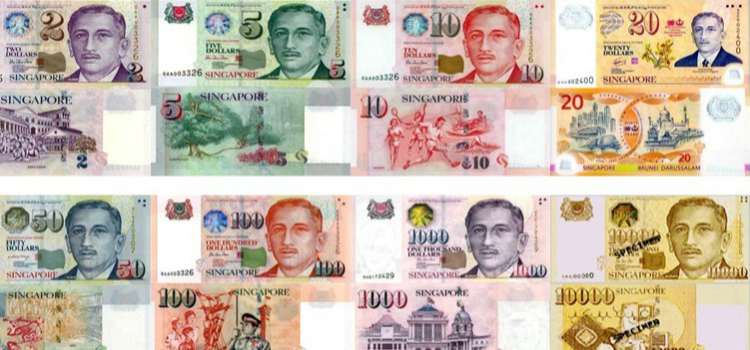

货币
新加坡元，英文简称SGD、S$。在当地，「$」符号通常用来表示新元，除非符号前面有其他前缀（US$即美金、HK$即港元）。硬币分为5分（金）、10分（银）、20分（银）、50分（银）和1元（金）5种，纸币则分为2元（紫）、5元（绿）、10元（红）、50元（蓝）、100元（橙）、1000元（紫）和1,0000元（金）。新加坡币跟人民币是浮动汇率，汇率一般约：1新加坡 =4.9人民币，若您想了解最新汇率，推荐使用无忧行汇率工具查看当地最新准确汇率。
其中面值一万元的纸币多为银行内部结算使用，相较于其它面值的纸币，它可以挂失并且使用时需要进行登记，但自2014年始停止发行，而已经发行的可继续流通。由于2元、5元和10元面值的钞票使用频率最高并出于清洁因素，不少采用塑料材质。新加坡和文莱签署了两国货币相互流通协议，并可等值直接在两地使用，所以找赎的时候可能会收到文莱币。

在新加坡用餐时会在餐牌上看到「$数字++」的标识，数字后的两个加号表示加一服务费（10%是政府允许营业额超过一定限额的餐厅向客户征收的服务费）和7%的消费税，付款时需要支付消费额及其税金。而餐牌上的NETT则表示是已含税总价。
一般来说，可在中国国内四大国有银行的分行、支行兑换新加坡元，有时可能需要预约，建议提前几天去兑换。
如果没有在出行前准备好新加坡币，亦可以在新加坡樟宜机场、银行、市内的“Money Exchange”商铺等地方兑换。机场兑换店的兑换率可能会较市内的兑换店稍逊一筹，其实不少百货公司接受外币付款，但兑换率可能不太理想。“Money Exchange”兑换店汇率实时浮动，而且可以还价，最好要货比三家。当地不少商场都设有外币兑换店，例如24小时营业的小印度Mustafa兑换店，可在其网站上查询到该店的最新汇率，莱佛士坊地铁车站旁边真者里（Change Alley）也有很多兑换小店，旅客可以自行对比决定。如果想兑换大额外币，应先询问店员报价，一般兑换率会比店内电子报价牌显示的兑换率更佳。除了新加坡元现金，广泛接受银联、维萨卡、万事达卡和美国运通等进行消费，此外，部分大型购物商场可以接受支付宝付款，迎合了中国消费者的付款习惯。
气候
新加坡地势低平，平均海拔15米，最高海拔163米，海岸线长193公里。属热带海洋性气候，常年长夏无冬，气温年温差和日温差小，高温潮湿多雨。年平均气温24℃～32℃，日平均气温26.8℃，年均降雨量在2,400毫米左右，年平均湿度84.3%。
每年11月到1月为雨季，最冷月为1月，平均低温一般会徘徊在摄氏23至24度左右。到了4月至5月这段期间，气温回升的同时雨量也会增多。由于新加坡全年炎热湿润，气温通常会达到 30 摄氏度以上，备好夏季衣服的同时可携带雨具，以提防突如其来的短时雨。

详细请看新加坡气象局官网：
网址：http://www.weather.gov.sg/
签证
新加坡驻华大使馆(北京)和驻成都、广州、上海和厦门的总领事馆从2014年12月8日起停止接收签证申请，申请者可以到大使馆指定单位/旅行社递交签证申请。自2017年2月1日起，新加坡签证费用将统一固定为人民币300元，统一费用将包括签证申请人支付给新加坡政府的签证费用30新元以及授权旅行社所收取的签证服务费。
除了有效护照、用英文填写完整的签证申请表格、两张两寸白底彩色近照和中国身份证等基本申请资料，按申请人情况需另外提供其他材料如在职证明、个人经济状况证明文件等。
签证办理时间一般三个工作日，建议申请者在出行前1到2周递交申请, 或向大使馆指定的单位/旅行社查询可递交申请的日期，未填好的表格、材料不齐或不符合要求有可能导致拒签或推迟受理。新加坡签证通常为多次入境，签证官会根据申请人提供的资料的不同，少数情况下也会发出单次入境签证。新加坡签证有多种有效期，分别为35天、62天、2年，签证的签发日期一般是大使馆指定的单位/旅行社的申请日，签证一旦被签发其有效期将不再变更，所以申请者应结合实际出发日期，不易过早递交申请材料。申请者在领取签证时，应仔细核对签发日期及签证有效期。
签证持有者并不一定可以入境新加坡。签证持有人须符合入境规定方可准许入境，如有效护照，足够的资金和往返机票（如需要），新加坡移民与关卡局官员有权决定其是否可以入境。新加坡移民与关卡局官员在签证持有者入境时决定其停留天数，停留期由移民局盖章许可，通常为14-30天，申请者应该注意护照的入境章上注明的停留期限。
欲查询申请签证所需材料，请参阅新加坡官方的说明。
网站：https://www.mfa.gov.sg/
通讯及邮政服务
作为一个高度发展旅游城市，免费WI-FI的覆盖范围相对广泛，例如樟宜机场#WiFi@Changi；在大型购物店、地铁站、旅游景点都有热点的Wireless@SG，可以用您的国外手机号码注册，之后会收到一条说明登录详情的短信，但注意可能会产生国际漫游费用。
还是担心WI-FI盲点或信号不强？利用无忧行APP购买新加坡流量让你免去一切忧虑，无需换卡，更有多个优惠套餐可供选择，让您度过无忧的新加坡之旅。
您亦可开通手机的国际漫游服务。拨打及接听本地和内地语音资费为每分钟0.99元人民币，拨打其他国家或地区每分钟3元人民币，发短信回内地资费为每条0.39人民币，发短信至其它国家和地区资费为每条1.29元人民币，接收短信免费。无忧行推出了境外免费电话功能，让你随时随地与国内连线无压力。
新加坡的邮政编号由六位数字组成，邮局遍布范围广，营业时间一般为星期一至五08:30至17:00，星期六08:30至13;00，星期日及公众假期除外。樟宜机场的邮局则是每天8:00至21:30营业；基里尼路1号（1 Killeney Rd）的邮局则是平日营业至九时，星期日及公众假期营业时间为10:00至16:00。寄明信片回中国的话邮资是0.6元新币，除了邮局，部分地铁车站找到邮政自助服务机（SAM machines），可以购买邮票，也可以投入邮筒的国外(Foreign)格子邮寄。明信片一般价格从0.5元新币到2元新币之间，旅游局游客中心还有免费明信片提供。
语言
新加坡汇聚了多民族文化，使用的语言也包括了英语、马来西亚语、华语、泰米尔语等。宪法明确马来语为其国语，而官方文字大多以英语为主，华人群体占当地居民的比重较大，而不少华人会使用普通话、闽南语、潮州话、客家话、广东话和海南话等华语。当地还有一种独有的方言被称为新加坡英语（Singlish），实际是指混杂着马来语、泰米尔语和华语的带有新加坡特色的非传统英语。新加坡大部分指示牌地方名等都是用英语书写的，而带有中文的指示牌是使用简体中文书写的。
文化及注意事项
新加坡是个多民族宗教文化融合的国家，所以到访时也需要尊重不同的风俗习惯。
到访印度寺庙、回教堂或者到当地人家做客时，进门之前要脱鞋；在享用印度或马来餐时，请使用右手；马来族的朋友多奉行穆斯林教，忌吃猪肉；参观庙宇或教堂时，必须着装端正，不能短裤短裙，不能随意拍照；交谈时请避免政治宗教等话题。
新加坡是个十分注重环境清洁和公共秩序的国家，法律非常严苛，所以作为初次到访的旅客而言一点要多加注意以免触犯受罚。旅客入境只能携带19根香烟，超过的每根罚款10新币；随地吐痰乱丢垃圾除了罚款，被判劳作悔改令要穿上黄色外套，在公众地方做清洁工作；禁止行乞；横穿马路不仅要支付罚金，一旦发生意外还需赔偿车辆损失费；禁止携带香口胶入境，当地房售卖的药用香口胶需要身份登记方可购买；机场内禁止给小费；除了明黄色油漆划分的区域为吸烟区，其他公共场所和空调区域不能吸烟；公共洗手间必须用后冲厕；除政府允许的项目，严禁其他违法赌博；地铁和车厢不能饮食，大声喧哗，不能携带违禁物品（包括榴莲）。
紧急联络电话及游客咨询中心
12308是外交部全球领事保护与服务应急呼叫中心为中国公民提供24小时领事保护与服务的领事保护热线。中国公民无论身处世界哪个角落，遭遇紧急情况时均可第一时间通过拨打呼叫中心热线，向祖国寻求领事保护与协助。在无忧行App中，提供了完全免费的12308拨打功能，只要手机可以上网，就可立即使用，不限时间。
在新加坡遇到需要协助的情况时，请不要着急，记住以下的常用紧急联络方式以便不时之需。新加坡共设立了3处游客咨询中心，除了解答疑问之外，还可以协作游客预订酒店、门票、制定行程、购买纪念品以及提供免费的Wifi等。
若您遇上紧急情况，可致电：
| 紧急求助电话（报警） | 999 |
| 急救和火警 | 995 |
| 意外（海事） | +65 6325 2488 |
| 警方热线电话 | 1800 225 0000 |
若您想寻求中国驻外机关或当地旅游局的协助，可致电：
| 中国驻新加坡大使馆 | +65 6471 2117 |
| 大使馆紧急领保求助 | +65 9297 1517 |
| 外交部领事局 | +65 6379 7719 |
| 旅游咨询 | 境内 1800 736 2000 |
| 旅游咨询 | 境外 +65 6736 2000 |
若您想查询其他常用信息，可致电：
| 新电信查号台 | 100 |
| 机场航班咨询 | +65 6541 2302 |
| 天气预报 | +65 6542 7788 |
| 中国银行新加坡分行 | +65 6535 2411 |
| 中国建设银行新加坡分行 | +65 6535 8133 |
| 中国工商银行新加坡分行 | +65 6538 1066 |
游客咨询中心
乌节路游客咨询中心
地址：216 Orchard Road，临近索美塞 (Somerset) 地铁站 (NS23)。
开放时间：每天上午 8:30 至晚上 9:30
ION Orchard游客咨询中心
地址：ION Orchard 购物中心 1 楼礼宾服务台，临近乌节 (Orchard) 地铁站 (NS24)。
开放时间：10:00-22:00
牛车水(Chinatown)游客咨询中心
地址：2 Banda Street（佛牙寺龙华院后方），牛车水（Chinatown）地铁站 (NE4/DT19)。
开放时间：每天上午 9:00 至晚上 9:00
小知识快速补给
1. 新加坡的当地时间与北京时间属同一时区，与中国没有时差。
2. 新加坡的自来水达到世界卫生组织标准可直接饮用。
3. 当地使用的是英式BS1363三角方形插頭（230V/50 Hz），需要转换插头使用国内电器设备。
4. 当地常年气温较高，日晒时间长，骤雨多发，请备好防晒用品和雨伞。
5. 乘坐扶梯的时候请靠左站立，右侧急行。
6. 八月底至十月期间，印尼大量烧芭蕉秸秆因风向问题，可能会影响到新加坡的空气质量。
7. 如果前往其他国家的飞行途中经过新加坡樟宜机场转机，而且登机前有 五个半小时以上的空闲等候时间，可以无需办理入境并在转机区内报名，参加免费新加坡之旅。
8. 新加坡海关对携带入境的外币没有最高金额限制。
9. 携带超过价值相当于50新币的个人用品及食品，超过此价值的部分需要缴税。
10. 新加坡大部分店铺都在11点之后开始营业至晚上10点。
11. 大部分餐厅食肆会收取10%服务费和7%消费税，而餐牌上的NETT则表示是已含税总价。
12. 自2015年4月1日起施行的禁酒令，从22时30分至翌日7点期间禁止零售酒类饮品亦不能在公共场合饮酒。
13. 帶有“红底金色鱼尾狮”标志的商店说明该店是新加坡旅游局认证的“品质、价格、服务皆有信用”的商店。莱佛士坊和喜阁购物中心内有新加坡旅游局的办事处，可索取鱼尾狮标志商店一览表小册子。
14. 新加坡的购物打折季主要集中在每年的六七月以及圣诞节期间。乌节路的百丽宫、义安城、ION等大型商场折扣力度最大。奢侈品牌中除了LV很少打折，其他奢侈品牌都不时有优惠活动。平价品牌常年在乌节路都会设有低价的特卖场，遇上打折季还会有折上折的活动。
15. 由于新加坡和文莱的双边货币等值流通协议，文莱币也可以直接在新加坡使用。